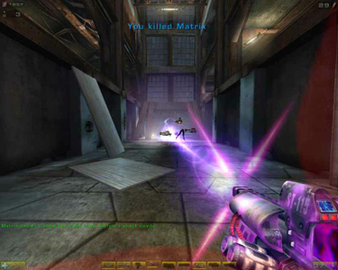
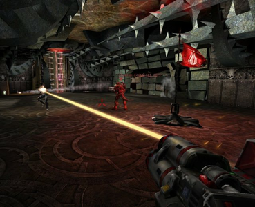

UT2004
Dieser Artikel wurde für die folgenden Ubuntu-Versionen getestet:
Ubuntu 14.04 Trusty Tahr
Zum Verständnis dieses Artikels sind folgende Seiten hilfreich:
Unreal Tournament 2004 ist der dritte Teil der Unreal Tournament-Reihe. Nach der Kritik am Vorgänger UT2003 wollte man sich diesmal wieder mehr am ersten Teil orientieren.
Zu den Änderungen gehören unter anderem:
Basiert auf Version 2.5 der Unreal Engine
Der aus dem ersten Teil bekannte Spielmodus Assault wurde wieder eingeführt
Erstmals gibt es fahrbare Fahrzeuge
Ein neuer, Battlefield-ähnlicher Spielmodi namens Onslaught wurde eingeführt
|  |  |
| Spielszene | Spielszene |
Installation¶
Atari¶
Der Loki-Installer linux-installer.sh befindet sich bei der von Atari vertriebenen Version auf der UT2004 DVD bzw. auf der ersten UT2004 CD. Diesen kopiert man in ein Verzeichnis seiner Wahl und startet ihn [1] [8] per:
chmod a+x linux-installer.sh sudo ./linux-installer.sh
Nach der Installation [6] sollte noch der aktuelle Patch bzw. das Mega Pack installiert werden.
Danach kann das Spiel mit dem Befehl
ut2004
gestartet werden [7], ansonsten über die Datei ut2004 im Verzeichnis des Spiels.
Midway¶
Inzwischen wird UT2004 nicht mehr von Atari, sondern von Midway vertrieben. Bei diesen Versionen fehlt der Linux-Installer auf dem Installationsmedium.
Unreal Tournament 2004¶
Installer¶
Einen Loki-Installer [6] dafür gibt es hier  . Das restliche Vorgehen entspricht der Atari-Version.
. Das restliche Vorgehen entspricht der Atari-Version.
Manuell¶
Schlägt die Installation mit dem Linux-Installer fehl, muss das Spiel manuell installiert werden:
Zunächst muss das Paket
unshield (universe [3])
 mit apturl
mit apturl
Paketliste zum Kopieren:
sudo apt-get install unshield
sudo aptitude install unshield
installiert [4] werden.
Nun erstellt man den Ordner /tmp/ut2k4_cabs und kopiert in diesen folgende Dateien von der DVD:
data1.hdr
data1.cab
data2.cab
data3.cab
data4.cab
data5.cab
data6.cab
Anschließend muss über die Konsole [1] folgender Befehl ausgeführt werden:
unshield -d ~/Spiele/ut2004 -D3 x /tmp/ut2k4_cabs/data1.cab
Im Terminal wird nun angezeigt, welche Dateien entpackt werden. Die letzte Meldung sollte 1805 files lauten.
CDkey¶
Weiterhin muss im Ordner ~/Spiele/ut2004/System eine Text-Datei namens cdkey erstellt werden. Dazu öffnet man die Datei ~/Spiele/ut2004/System/cdkey in einem Editor [5]. In diese Datei muss die Seriennummer von UT2004 in GROSSBUCHSTABEN geschrieben werden.
UBUNT-UUSER-SRULE-S1234
Abschließend muss noch der Patch installiert werden. Danach kann das Spiel über ut2004 gestartet werden. Der Ordner /tmp/ut2k4_cabs wird nicht weiter benötigt und kann gelöscht werden.
Unreal Anthology¶
Vorbereitung¶
Das Paket
unshield (universe)
mit apturl
Paketliste zum Kopieren:
sudo apt-get install unshield
sudo aptitude install unshield
muss im Vorfeld installiert [4] werden.
DVD¶
Für die Installation von Unreal Anthology legt man zuerst einen Ordner ~/ut2004pre an. In diesen wechselt man und kopiert alle benötigten Daten von DVD:
data1.cab
data1.hdr
data2.cab
data3.cab
data4.cab
data5.cab
data6.cab
data7.cab
data8.cab
data9.cab
data10.cab
data11.cab
Dies kann über das Terminal [1] erfolgen:
cp /media/marc/UNREAL_ANTHOLOGY/Disk?/data?.* . #Laufwerkspfad ggf. anpassen.
Anschließend werden die Daten nach ~/Spiele/ut2004 extrahiert:
unshield -d ~/Spiele/ut2004 -D3 x data1.cab
17752 Dateien und 169 Ordner sind das Endresultat. Die überflüssigen Daten können umgehend gelöscht werden [1]:
rm -rf _* 1_* 2_* 3_* Launcher* All_UT2004.EXE OCXFiles rm data?.* ~/ut2004pre
Im Installationsverzeichnis findet man folgende Struktur:
... 4_UT2004_Help 4_UT2004_Help_English ... 4_UT2004_Sounds_All 4_UT2004_Sounds_English 4_UT2004_Sounds_French 4_UT2004_Sounds_GermanAll ...
Diese wird angepaßt:
ls -d 4_UT2004_* | sed 's/^4_UT2004_\(.*\)$/mv & \1/' | bash
Nun von der gewünschten Sprache die Dateien in den jeweiligen Hauptordner kopieren. Hier z.B. alles aus Help_Germanall nach Help kopieren. Gleiches gilt für Manual, Sounds, Speech und System im Anschluss bei allen Ordnern die Endung all entfernen. So wird aus Sounds_All z.B. Sounds:
ls -1d *_All | sed 's/\(.*\)_All$/\[ -d \1 \] \&\& mv &\/* \1\/ || mv & \1/' | bash
Es sollte sich die folgende Struktur herausgebildet haben:
Animations
Benchmark
ForceFeedback
Help
KarmaData
Manual
Maps
Music
Sounds
Speech
StaticMeshes
System
Textures
Web
1708 Dateien bei ca. 5,9 GB Speicherplatz.
Nun den CDkey hinterlegen und das Spiel patchen, da ansonsten kein Starter zur Verfügung steht. Nach erfolgreichem patchen stehen im Installationsverzeichnis unter System die Starter ut2004-bin (32bit) und ut2004-bin-linux-amd64 (64bit) zur Verfügung und können im Menü [9] hinterlegt werden.
Patch¶
Mega Pack¶
Nach der Installation sollte man UT2004 noch auf den aktuellen Stand bringen. Die einfachste Methode ist die Installation des Mega Packs, mit dem das Spiel auf die neuste Version gebracht wird und zahlreiche zusätzliche Maps und das ECE-Bonuspack installiert werden. Ein Loki-Installer [6] kann von hier heruntergeladen werden.
Manuell¶
Sofern man das Spiel manuell installiert hat funktioniert die Installation des Mega Packs nur über einen Umweg. Im Homeverzeichnis im versteckten Ordner .loki/installed/ die Datei ut2004.xml anlegen [5]. Sofern die Ordner nicht existieren müssen sie angelegt werden. Der Inhalt der Datei sollte so aussehen:
1 2 3 4 5 6 7 8 9 | <?xml version="1.0"?> <product name="ut2004" desc="Unreal Tournament 2004" xmlversion="1.6" root="/home/marc/Spiele/ut2004" update_url="http://unreal.epicgames.com/updates/ut2004/updates.txt"> <component name="__CDKEY__" version="3369" default="yes"> <option name="English"></option> <option name="__CDKEY__" tag="__CDKEY__"></option> </component> </product> |
Hinweis:
Den Installationspfad unter root="" anpassen.
ut2004¶
Zum manuellen Patchen ut2004-lnxpatch3369.tar.bz2 und ut2004-lnxpatch3369-2.tar.bz2 von unrealadmin.org  bzw. ausgamers.com herunterladen und in das Installationsverzeichnis entpacken [2]. Hier werden die vorhandenen Ordner und Dateien ersetzt.
bzw. ausgamers.com herunterladen und in das Installationsverzeichnis entpacken [2]. Hier werden die vorhandenen Ordner und Dateien ersetzt.
Problemlösungen¶
UT2004 startet nicht wegen falschen Benutzerrechten¶
Ist man nach der Installationsanleitung vorgegangen und hat den aktuellen Patch installiert, kann man beim Spielstart in der Konsole folgende Fehlermeldung erhalten:
Can't find 'ini:Engine.Engine.GameEngine' in configuration file History: Exiting due to error
ist noch eine Änderung per chown notwendig. Bei der Spielinstallation wurde im Home-Verzeichnis des Benutzers ein verstecktes Verzeichnis /.ut2004 mit Unterverzeichnissen und Dateien angelegt. Durch die Installation mit Root-Rechten wurden diese Verzeichnisse und Dateien sowohl als Besitzer wie auch von der Gruppe dem Root zugeordnet. Abhilfe schafft folgender Befehl, der die Verzeichnisse und Dateien dem Benutzer und dessen Gruppe zuordnet:
sudo chown -R benutzername:gruppenname ~/.ut2004
UT2004 startet nicht auf 64bit Systemen¶
Wenn man die 64bit-Architektur von Ubuntu verwendet, startet das Spiel nicht mehr. Um dies zu beheben, muss man das Startskript ~/Spiele/ut2004/ut2004 modifizieren. Dazu öffnet man diese Datei in einem Editor [5]:
Folgender Abschnitt:
# Let's boogie!
if [ -x "${UT2004_DATA_PATH}/ut2004-bin" ]
then
cd "${UT2004_DATA_PATH}/"
exec "./ut2004-bin" $*
fi
echo "Couldn't run UT2004 (ut2004-bin). Is UT2004_DATA_PATH set?"
exit 1muss in
# Let's boogie!
if [ -x "${UT2004_DATA_PATH}/ut2004-bin-linux-amd64" ]
then
cd "${UT2004_DATA_PATH}/"
exec "./ut2004-bin-linux-amd64" $*
fi
echo "Couldn't run UT2004 (ut2004-bin-linux-amd64). Is UT2004_DATA_PATH set?"
exit 1geändert werden. Danach startet das Spiel wieder.
UT2004 startet nicht wegen fehlerhaften Shared Libraries¶
Erhält man beim Starten des Spiels folgende Fehlermeldung
error while loading shared libraries: ./libSDL-1.2.so.0: cannot open shared object file: No such file or directory
oder verwendet man die 64bit-Architektur von Ubuntu müssen noch Bibliotheken für OpenAL installiert [4] und Links zu den Libraries gesetzt werden [1]:
libopenal1 (universe [3])
mit apturl
Paketliste zum Kopieren:
sudo apt-get install libopenal1
sudo aptitude install libopenal1
rm ~/Spiele/ut2004/System/libSDL-1.2.so.0 rm ~/Spiele/ut2004/System/openal.so # 32 bit ln -s /usr/lib/libSDL-1.2.so.0 ~/Spiele/ut2004/System/libSDL-1.2.so.0 ln -s /usr/lib/libopenal.so.1 ~/Spiele/ut2004/System/openal.so # 64 bit ln -s /usr/lib/x86_64-linux-gnu/libSDL-1.2.so.0 ~/Spiele/ut2004/System/libSDL-1.2.so.0 ln -s /usr/lib/x86_64-linux-gnu/libopenal.so.1 ~/Spiele/ut2004/System/openal.so
UT2004 startet nicht wegen fehlender "libstdc++.so.5"¶
Sollte folgende Meldung erscheinen:
error while loading shared libraries: libstdc++.so.5: cannot open shared object file: No such file or directory
muss folgendes Paket Installiert werden [4]:
libstdc++5 (universe [3])
mit apturl
Paketliste zum Kopieren:
sudo apt-get install libstdc++5
sudo aptitude install libstdc++5
Soundprobleme¶
UT2004 verwendet das veraltete Soundtreibersystem OSS. Sollte der Sound unter folgender Fehlermeldung nicht funktionieren
open /dev/[sound/]dsp: No such file or directory
oder muss UT2004 nach dem Beenden noch in der Sytemüberwachung abgewürgt werden, weil es sonst den Soundserver blockiert, können folgende Lösungsmöglichkeiten helfen.
Lösungsmöglichkeit 1 (PulseAudio)¶
Um den Ton über den Soundserver PulseAudio umzuleiten, muss folgendes Paket installiert werden [4]
pulseaudio-utils
mit apturl
Paketliste zum Kopieren:
sudo apt-get install pulseaudio-utils
sudo aptitude install pulseaudio-utils
Das Spiel muss über folgenden Befehl im Terminal [1] gestartet werden
padsp ut2004
Um nicht bei jedem Aufruf padsp manuell aufrufen zu müssen, kann man das Startskript ut2004 im lokalen Installationsverzeichnis modifizieren. Dazu öffnet man diese Datei in einem Editor [5]:
Die Zeile
exec "./ut2004-bin" $*
muss in
exec padsp "./ut2004-bin" $*
geändert werden.
Lösungsmöglichkeit 2 (UT2004.ini)¶
Im Ordner ~/.ut2004/System/ die Datei UT2004.ini" bearbeiten [5].
Im Abschnitt [ALAudio.ALAudioSubsystem]muss der Punkt UseDefaultDriver=True auf UseDefaultDriver=False gesetzt werden.
Außerdem sollten auf jeden Fall die symbolischen Links zu den Sound-Libraries (openal) aus dem vorherigen Abschnitt gesetzt werden.
Falsche Auflösung¶
Oft lassen sich die gewünschten Auflösungen nicht im Settings-Menü von UT2004 einstellen. Abhilfe schafft eine manuelle Anpassung [5] der UT2004.ini-Datei in ~/.ut2004/System/.
Im Abschnitt "[SDLDrv.SDLClient]" setzt man einfach folgende Punkte auf die gewünschten Werte:
FullscreenViewportX=1366 FullscreenViewportY=768
Texturen, Maps, o.Ä. werden nicht gefunden¶
Je nach Vorgehensweise der Installation kann es vorkommen, dass *.utx Dateien nicht gefunden werden. Dabei kann es sich z.B. um Texturen oder Maps handeln. Die Dateien liegen dann noch komprimiert im jeweiligen Ordner. Mit folgendem Befehl - aus dem System-Ordner heraus - können diese dekomprimiert werden.
find .. | grep uz2 | xargs -n 1 ./ucc-bin decompress
Um hinterbliebene unnötige *.uz2 Dateien zu entfernen, kann dieses schnell mit Folgendem getan werden:
find .. | grep uz2 | xargs rm -v
Maps¶
Die fleißige Community hat im Laufe der Zeit eine Vielzahl an Maps für UT2004 veröffentlicht. Empfohlen für Online-Player sind neben dem oben erwähnten Mega Pack die folgenden beiden Map Packs:
Außerdem sind im Spielmenü unter Community sind noch einige Ownage Maps zu finden. Um heruntergeladenen Archive zu installieren, müssen diese einfach ins UT2004 Verzeichnis entpackt [2] werden.
Hinweis:
Alternativ kann man Maps (und Map Packs) auch nach ~/.ut2004 entpacken [2], wenn man sie nur dem aktuellen Nutzer zur Verfügung stellen will. In-Game Downloads von Maps, Mods und Mutators werden automatisch im UT2004 Verzeichnis des Nutzers gespeichert und können anschließend ins UT2004 Programmverzeichnis kopiert werden, um sie allen Nutzern des Systems zur Verfügung zu stellen.
Mods¶
Im Folgenden seien kurz einige ausgewählte Mods für UT2004 genannt. Eine Auflistung von weit über 100 weiteren Mods für UT2004 ist unter Moddb.com zu finden.
Generell laufen eigentlich alle Mods auch unter Linux. Sie werden wie Maps und Map Packs in der Regel durch das Entpacken [2] eines Archives ins UT2004 Verzeichnis installiert.
Hinweis:
Alternativ kann man Mods (und Mutators) auch nach ~/.ut2004 entpacken [2], wenn man sie nur dem aktuellen Nutzer zur Verfügung stellen will. In-Game Downloads von Maps, Mods und Mutators werden automatisch im UT2004 Verzeichnis des Nutzers gespeichert und können anschließend ins UT2004 Programmverzeichnis kopiert werden, um sie allen Nutzern des Systems zur Verfügung zu stellen.
Falls nur Windows-.bat-Skripte oder Ähnliches zum Starten von diesen vorliegen, muss man sie mit diesem Befehl starten:
cd /pfad/zu/ut2004/System ./ut2004-bin --mod=<Mod-Name>
Wobei <Mod-Name> dem Ordnernamen des Mods entspricht.
UTComp¶
UTComp fügt diverse Optionen wie Brightskins, Hitsounds, Warmup Time, usw. zum Gameplay hinzu und wird oft bei Deatmatch Turnieren vorausgesetzt. Auf der Homepage der Modmacher wird leider nur noch UTComp für UT3 angeboten.
TAM¶
An Mods hat sich neben iCTF besonders TAM in der Beliebtheitsskala der Spieler hervorgetan. TAM ist die Abkürzung für Team Arena Masters und ähnelt der Quake Mod Rocket Arena . Leider ist die Homepage der Modmacher nicht mehr erreichbar.
DodgeProMod¶
Die DodgeProMod ermöglicht es einem seine Trick-Jump Skills in UT2004 zu verbessern und gegen die Zeit von anderen Trick-Jumpern anzutreten. Die Homepage der Modmacher und damit die aktuelle Version (2004v35) ist leider nicht mehr erreichbar.
Deathball¶
Deathball ist eigentlich nichts anderes als ein Fußballspiel. Man muss den Ball einsammeln, kann damit herum laufen, passen oder auf das Tor schießen. Im Strafraum ist es außerdem möglich Gegner mit der Waffe zu töten.
TO:Crossfire¶
Tactical Ops: Crossfire ist eine Mod ähnlich zu Counter-Strike. TO:Crossfire bietet die Möglichkeiten einzelne Waffen bzw. Ausrüstungsgegenstände zu kaufen und Bomben zu legen. Das Spiel verfügt über gute Musik, interessanten Statistiken während der einzelnen Spielrunden und wird in einer Art Widescreen-Modus gespielt.

Infobox¶
| Unreal Tournament 2004 | |
| Genre: | Ego-Shooter |
| Sprache: |  |
| Veröffentlichung: | 2004 |
| Publisher: | ehemals Atari, inzwischen Midway |
| Systemvoraussetzungen: | Intel PIII oder AMD Athlon >= 1 GHz / 256 MB RAM / 5,5 GB freier Festplattenspeicher / DVD-ROM / Grafikkarte >= 64MB RAM |
| Medien: | DVD (1) oder CD (6) |
| Strichcode / EAN / GTIN: | 3546430107836 / 5050740022782 |
| Läuft mit: | nativ |

- Erstellt mit Inyoka
-
 2004 – 2017 ubuntuusers.de • Einige Rechte vorbehalten
2004 – 2017 ubuntuusers.de • Einige Rechte vorbehalten
Lizenz • Kontakt • Datenschutz • Impressum • Serverstatus -
Serverhousing gespendet von